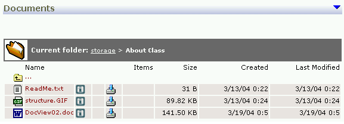

MIT's Anti-web Learning Management System
2004-05-11
MIT's Anti-web Learning Management System
MIT has released their new source-available LMS, Caddie, written in .NET.
This is not a full review - but I have a couple of whinges about the demonstration site.
Firstly, this reeks of Microsoft influence of the not so nice kind - not because it's in .Net, but because all the content in their sample sites is in Word. This is not the way to do things on the web. It's slow, it's a security risk, it can be very embarrasing when other people uncover the history of your documents. And it makes it virtually impossible to link between items of content, or bookmark them. The URLs in the system also look pretty fragile, so I am guessing that linking would be hard even with HTML content.
Here's a partial screenshot of the sample site.

Open the course outline (it's DocView02.doc, in case your X-Ray vision is impaired), which appears to have no actual title and you find this:
Students will be expected to have their own PC workstation or laptop (preferably running Windows 2000 or XP) which must be capable of running the Microsoft.NET Framework and Visual Studio.NET. The software is available to MIT registered students as part of a grant from Microsoft.
So it is a Microsoft plot. I wonder if the grant stipulated that all courseware was to be published in MS Word format?
Ironically, some of the content is written using the "O'Reilly RTF Template for Microsoft Word" which I understand is designed for authors to create books that will end up being published in XML, in Docbook format. (try this Google search to see how many other people use it without changing the title.) Sadly, a lot of the rest of it is written in ad-hoc Word, ie mostly Normal style. So this is what MIT is going to give the world in the Open Courseware Initiative?. A bunch of Word documents presented in the browser as a file system?
Which brings us (secondly) to this gem:
Suppose I teach a course and I have packaged everything up into a single package of files. In the first lecture I have put links and references to later lectures and so on, so the whole package is tightly integrated. For me it's great because I know how I structured everything.
Yep, it *does* sound great.
But wait, here's a scoop!
MIT says links considered disastrous
However, for you, who may want to use just part of my material in your course it's a disaster. Instead of being able to give you digestible bite sized pieces, you must swallow the whole thing.
Right, because my web page has links you have to swallow the whole web?
It would have been far better if I'd have built my course in smaller self contained independent units. It would be even better if those units had some standardized structure so that if I understood one unit then picking up another would be easy (hence the move towards "learning objects").
Excuse me, but educational institutions and processes do not exist for the convenience of the teachers, or to gratify reductionist software developers. Not to mention the units on offer here are Word documents, with no discernable standardized structure. (To be fair this quote is presented as an analogy used to promote the idea of web services, it's clearly not an MIT strategy statement, but the rest of the evidence is pointing in a similar direction, so I'll keep ranting.)
I work for an organisation which in turn works for a number of educational institutions, many of which are experienced, successful distance educators. They work hard to construct richly interlinked course offerings, not to smash their content into little bits. Why? because its *great for the learners*. They, and publishers like O'Reilly who understand the value of chunks of text larger than an encylopaedia entry are apparently safe from MIT, with its relentless drive to package learning materials as stand alone paragraphs, each sealed in a web-proof Word document. If MIT had all their content in the O'Reilly template then they'd be moving towards learning objects. At this stage they're running the other way.
Stay tuned for some practical advice about how to turn your Word documents into real web content.